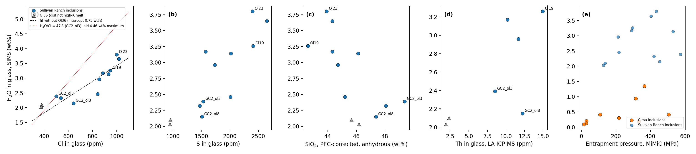
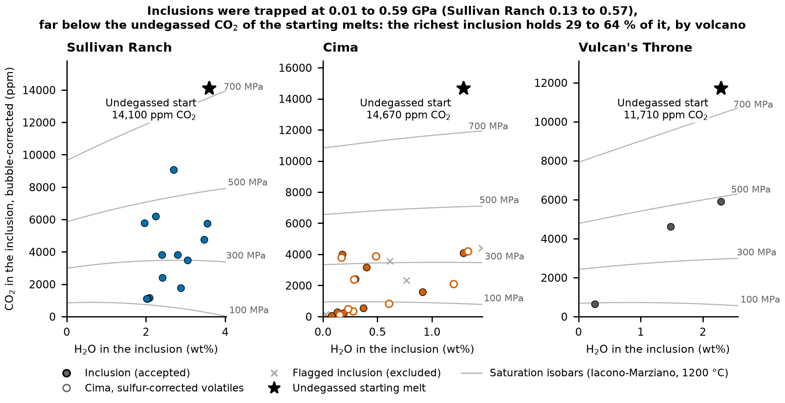

6 Results: melt inclusions and the starting melt
What do the melt inclusions record, and which melt should the ascent models start from? Twelve SR inclusions are used: five from the pit scoria (AZ18-06 Ol19, Ol21, Ol23, Ol35, Olxx), the Ol36 pair from the pit, and five from the roadside scoria AZ09-GCB (GC2_ol3, ol5, ol7, ol8, ol11). The sections below show what the inclusions record, how much CO2 the melt had already lost, how the two sites differ, and the starting melts built from them (Table 6.2).
6.1 What the inclusions record
The spread in inclusion H2O is a property of the trapped melts, not the result of H loss. H2O in the measured glass rises with Cl (r = +0.90) and S (+0.86) across the 12 inclusions and is not ordered by entrapment pressure (+0.29, p = 0.37; Figure 6.1). Degassing removes S before H2O and H2O before Cl, and Cl is so soluble in mafic melt that it seldom leaves until very low pressure, so a tight H2O–Cl correlation cannot come from degassing or from diffusive H loss. The simplest reading is batches: a wet, Cl- and S-rich, low-SiO2 melt and a drier, more siliceous one, either mixed or trapped separately. With ten main-group inclusions this is a lean, not a proof. A size test agrees: Ol21 should re-equilibrate 3.3 times faster than Ol23 if H were being lost through the olivine, yet their H2O (3.47 and 3.55 wt%) agree within 2 %.

Plotted together, the three volcanoes keep their separate fields (Figure 6.2). SR inclusions are wetter than Vulcan’s Throne’s, which are wetter than Cima’s. The Duan and Zhang bubble correction shifts bubble-corrected CO2 by only −2.8 to +14.8 % across 39 inclusions, so the pattern does not depend on the equation of state.

6.2 CO2 lost before trapping
Every inclusion trapped a melt that had already lost CO2. Bubble-reconstructed CO2 reaches 9,079 ppm (GC2_ol7; 8,529 ppm in the published MiMiC run, which is the primary start), and the saturation pressures with bubble CO2 are 129–574 MPa, far shallower than xenolith pickup at about 1.15 GPa. The melt’s own Nb gives the undegassed amount: CO2 equals CO2/Nb times Nb, and the lava has 59 ppm Nb. The depleted-mantle ratio of 239 (Saal et al. 2002) gives 14,100 ppm, and the ocean-island ratio of 505 ± 168 (Rosenthal et al. 2015) gives 29,800 ppm. Every inclusion lies below both, and with each inclusion’s own LA-ICP-MS Nb and the ratio 239, the melts had lost 46–91 % of their CO2 (36–77 % on the lava Nb with ratios of 239–673). The same inclusions had lost at most 0.21 wt% H2O to a CO2-rich vapor before trapping (median 0.05 wt%), because H2O stays in the melt at those pressures. Measured CO2/Nb is 21–130, which is 0.05–0.58 times 239; this independently shows CO2 degassing before trapping and rules out an over-corrected bubble. CO2/Ba was tried as the tracer and rejected, because SR Ba/Nb is 11.5–16.5, far above that of the reference pairs.
Whether the CO2/Nb correction is worth making is a question for co-authors (Chapter 11). It moves the rate by about 10 %, because CO2 sets only where degassing starts, and the H loss that the profiles record happens below about 60 MPa. It matters for depth: the CO2/Nb 239 start saturates at 922 MPa, close to pickup, and the 505 start at 1,438 MPa, deeper than pickup.
6.3 The two localities
The roadside GC2 inclusions are drier than the pit inclusions at the same host Fo, lower in Cl and S, and trapped deeper (Table 6.1). H loss could lower H2O, but it cannot lower Cl and S, so the roadside inclusions are a different batch. Ol36 is a distinct evolved melt: its Fo 79 hosts, shallow pressures (129–138 MPa) and low Cl mark a degassed melt in the pit pulse. No inclusion samples the final roadside melt that the roadside olivine rims need (Fo 80.7–83), and Ol36 is more evolved than it.
| Group | Host Fo | H2O (wt%) | Cl (ppm) | S (ppm) | Pvbg (MPa) |
|---|---|---|---|---|---|
| Pit: Ol19, 21, 23, 35, xx | 84.2–86.1 | 2.41–3.55 | 842–1018 | 1733–2647 | 212–433 |
| Pit: Ol36 (two inclusions) | 79.3–79.7 | 2.02–2.09 | 376–379 | 949–955 | 129–138 |
| Roadside: GC2 ol3, 5, 7, 8, 11 | 84.7–86.2 | 1.96–2.80 | 500–932 | 1471–2018 | 291–574 |
GC2_ol4 has no measured volatiles; the 2023 table carried GC2_ol3’s values for it, so it is left out. Cima inclusions 06b_a and 12_a stay in the workbook as flagged rows: 06b_a is too magnesian for its host, and 12_a has no host Fo.
6.4 The starting melt
The ascent models need the melt before it degassed, in the state the inclusions sample (Fo 84–87). Table 6.2 lists the candidates. The primary start is the published MiMiC melt as trapped; the CO2/Nb corrections follow as the second scenario. The caveat is that the MiMiC melt has already lost CO2 before trapping (46–91 % per inclusion), so the MiMiC path starts partly degassed (saturation 682 MPa, shallower than pickup at about 1.15 GPa); the CO2/Nb start is the case for an undegassed melt.
| Start | H2O (wt%) | CO2 (ppm) | What it assumes | MagmaSat saturation (MPa) | Ol-2 rate, isothermal (MPa/s) |
|---|---|---|---|---|---|
| Published MiMiC, as trapped (primary, used) | 3.549 | 8,529 | Ol23 H2O (PEC only) with the CO2 of GC2_ol7 (Rasmussen et al. 2020, base run); CO2 already partly degassed | 682 | 0.143 (0.92× the CO2/Nb start) |
| CO2/Nb 239 (SR-1, second scenario) | 3.59 | 14,100 | Ol23 H2O plus the H2O lost to its bubble; CO2 = 239 × Nb 59 ppm | 922 | 0.155 |
| Production MiMiC (SR-3) | 3.55 | 9,080 | As the published run with the production inclusion values | 708 | 0.144 |
| CO2/Nb 505 (SR-2) | 3.59 | 29,800 | As SR-1 with the ocean-island ratio; deeper than pickup | 1,438 | not run |
| Erupted-bulk mixture (SR-6) | 2.72 | 14,100 | H2O from the H2O–SiO2 relation at the lava SiO2 and from H2O/Ce | 921 | 0.174 |
Published MiMiC (primary). Ol23 holds 3.549 wt% H2O after correction for crystallization (3.55 in the production run). With the CO2 of GC2_ol7 (8,529 ppm) it gives the as-trapped melt, which starts the degassing path partway down at 682 MPa (708 MPa for the production run). The 2023 start (3.36 wt%, 8,529 ppm, published MiMiC on the 2023 inputs) gave 0.141 MPa/s.
CO2/Nb (second scenario). SR-1 adds the back-calculated bubble H2O (0.04 wt%) to Ol23 and takes CO2 from CO2/Nb 239, giving 3.59 wt% (3.37–3.76) and 14,100 ppm. The wet end falls to 3.34 wt% if a Fe-loss correction is applied. The MiMiC start was refit and gives 0.093 MPa/s on the P–T path against 0.101 for the CO2/Nb start.
Mixture. The erupted-bulk mixture of 2.72 wt% (2.63–2.80) is the main sensitivity case, close to the wettest roadside inclusion (GC2_ol5, 2.80 wt%). A dry batch (GC2_ol3, ol8, ol11) holds 2.20 wt% (1.96–2.40).
The MiMiC start is supported by more than the inclusions. If the host magma reset the xenolith pyroxenes, the intact WHT1 opx cores (about 411 ppm) record the melt they equilibrated with, and the opx-anchored K (117.7 ppm per wt%) gives 3.48 wt%, within 2 % of the MiMiC start (3.549), within 3 % of the CO2/Nb start and well above 2.72. The joint rate fit with the MiMiC start has a chi-square of 20.6 on the path, against 41 for the mixture with the CO2/Nb-start fit. The opx plateaus near 300–320 ppm complicate this, because they equal the mixture with the same K (Chapter 9).
Where the inclusion values come from matters less than it may seem. The production and the published MiMiC change every rate by 1.4 % or less, because the saturation pressures differ by a few percent and H loss happens at low pressure. The 2026 input changes (revised pit SIMS and a corrected Ol36_2 CO2) move the pyroxene rates by up to 4.4 %, more than the code does (Appendix B). The choice between the two CO2 starts moves the rate by about 10 % and the mixture by up to 21 %, more than either.
The melt that the models start from is now fixed, and the next chapters use it: Chapter 7 covers the eruption and Chapter 8 the ascent in degassing magma.
Sources: data/supplement/summary_csv/ (Melt_Inclusions, Magma_Models, Trace_Elements); docs/supplement/SUMMARY_WRITEUP_NOTES.md; data/original_volatiles_2026/; results/decompression/mimic_compare/.